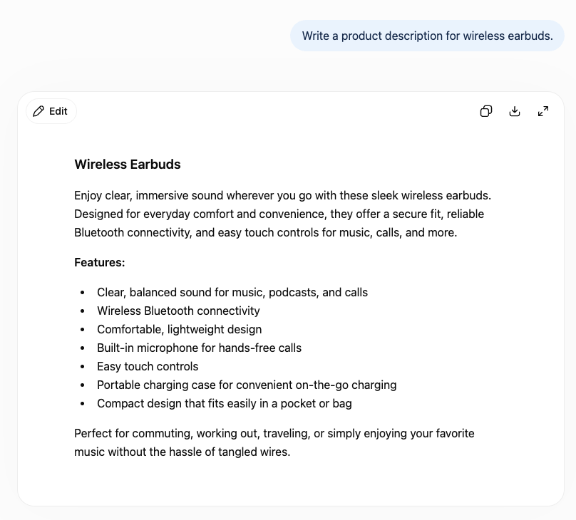
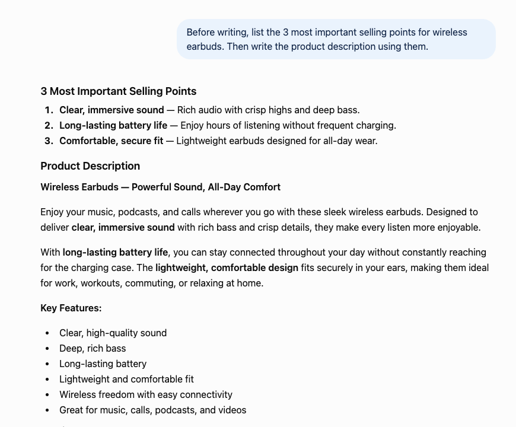
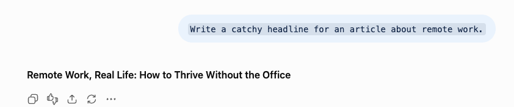
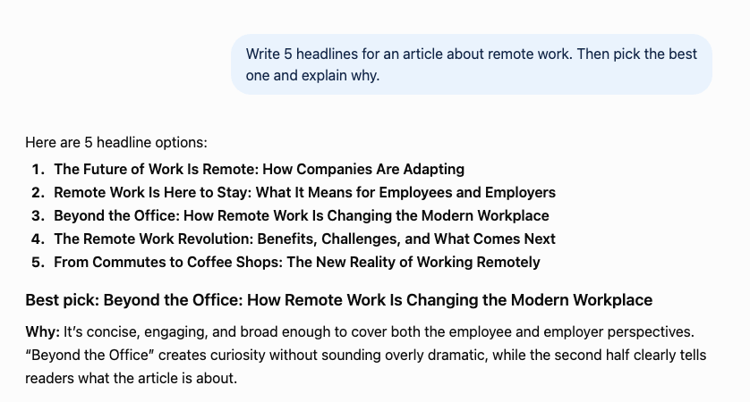
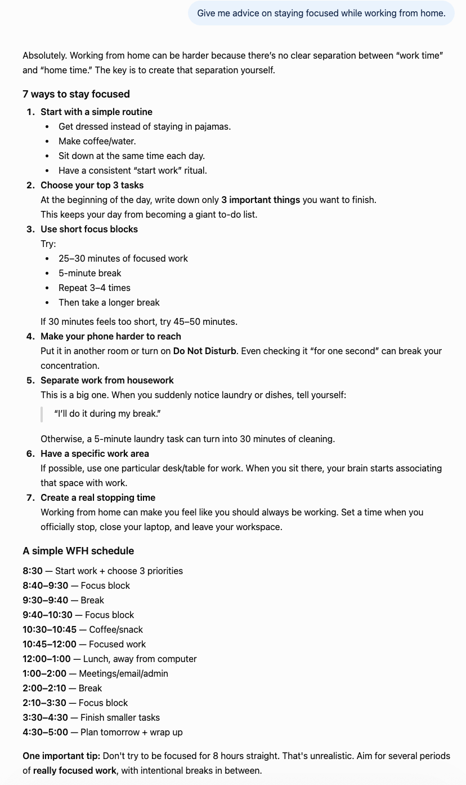
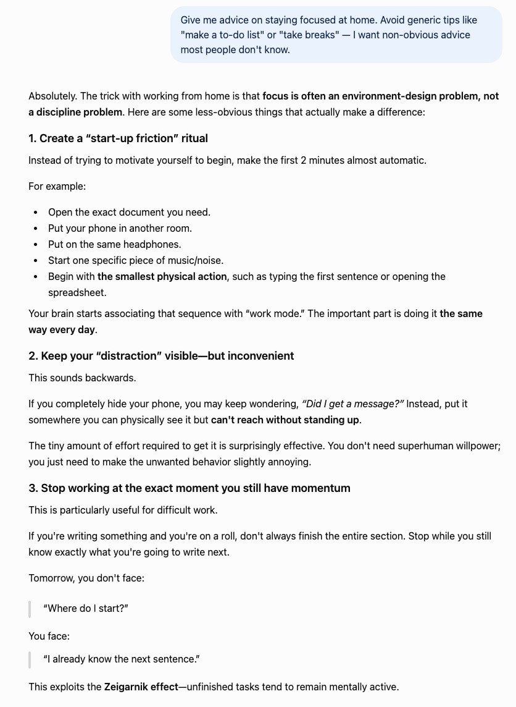
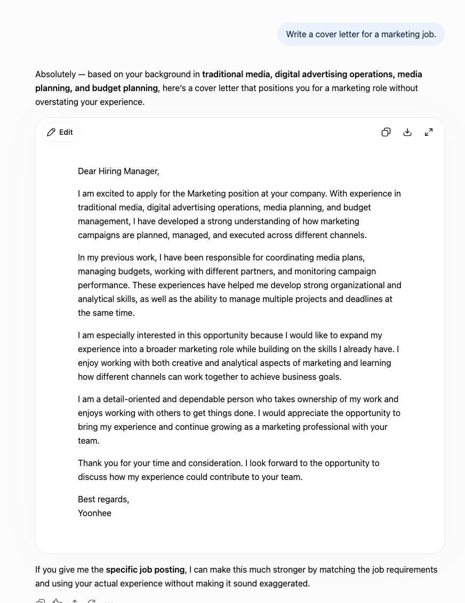
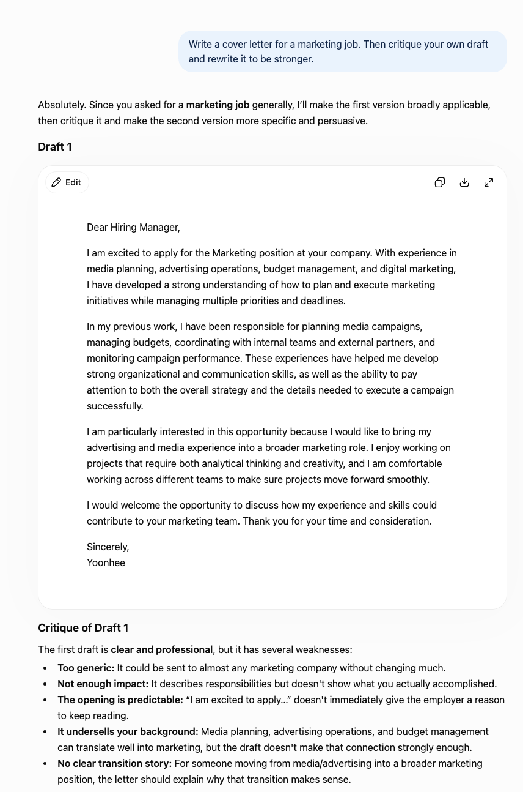
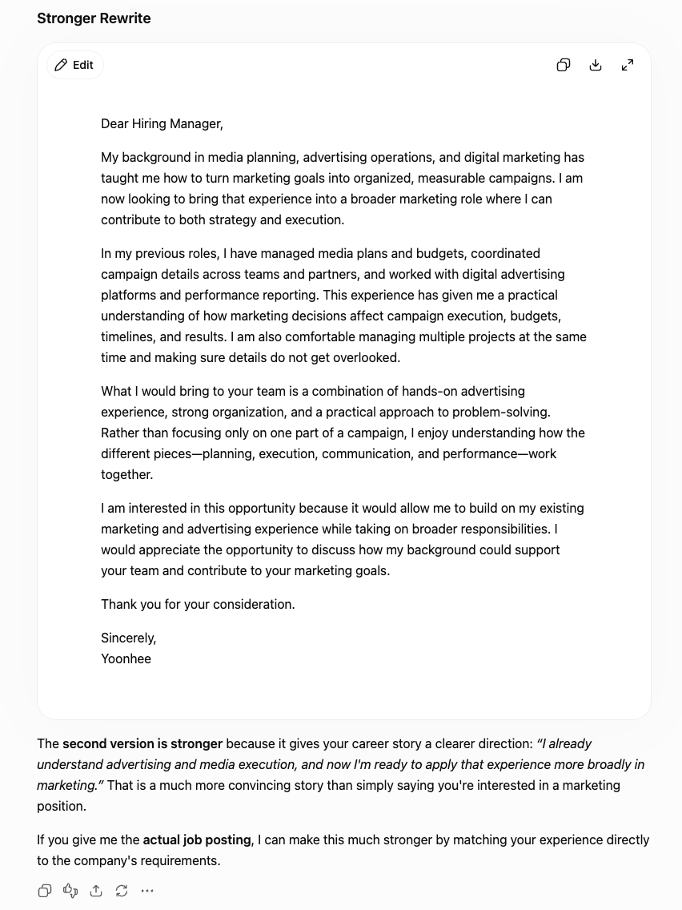

Not "write longer prompts." These four change how ChatGPT thinks. I tested each against a plain version — two were dramatic, one barely helped.
Most "prompt engineering" advice boils down to one thing: write longer, more detailed prompts. But adding more detail is just placing a more specific order — ask for a table and you get a table. That is not a skill, it is a menu.
The real question is different: with the same goal and roughly the same effort, how do you phrase a prompt so the answer itself is better — deeper, sharper, more useful? So I tested four techniques that change how ChatGPT thinks, not just what it outputs. I ran each one against a plain version of the same request in ChatGPT and compared the results honestly. Two were dramatic. One was solid. One barely moved the needle — and I will tell you which.
The idea: force the model to plan before it produces, so the output is built on a deliberate structure instead of improvised on the fly.
Plain: "Write a product description for wireless earbuds."

Technique: "Before writing, list the 3 most important selling points for wireless earbuds. Then write the product description using them."

Verdict: real, but modest. The planned version was a little more organized and led with clear benefits, but honestly, the final description was not dramatically better than the plain one. For a simple task like this, the model already does this planning internally. This technique earns its keep on complex, multi-part writing — but on a short description, do not expect a night-and-day difference. I would rather be honest about that than oversell it.
The idea: instead of one shot, have the model produce options and then evaluate its own work to choose a winner.
Plain: "Write a catchy headline for an article about remote work."

Technique: "Write 5 headlines for an article about remote work. Then pick the best one and explain why."

Verdict: a clear win. The single headline was fine, but with no way to know if it was the best the model could do. Asking for five plus a reasoned pick did two things: it gave better raw options, and the self-evaluation ("concise, creates curiosity without being dramatic") surfaced a genuinely stronger choice. You also walk away understanding why one works — which makes you better at judging the next one. Low effort, real improvement.
The idea: explicitly forbid the clichés the model would otherwise reach for first, forcing it past the surface-level response everyone has already read.
Plain: "Give me advice on staying focused while working from home."

The plain version was exactly what you would expect, and exactly what every other article says: get dressed, work in 25-minute blocks, put your phone in another room, have a dedicated desk. Not wrong — just completely generic.
Technique: "Give me advice on staying focused at home. Avoid generic tips like 'make a to-do list' or 'take breaks' — I want non-obvious advice most people don't know."

Verdict: the most dramatic difference of all four. Banning the clichés forced ChatGPT into genuinely useful territory: keep your distraction visible but inconvenient (so you stop wondering about it without the friction of digging it out); stop working while you still have momentum so tomorrow you think "I already know the next sentence" instead of "where do I start" (it even named the Zeigarnik effect); write deliberately "ugly first drafts" to beat the resistance of making something good. This is the single highest-leverage trick I tested. When you feel an AI giving you surface-level answers, explicitly banning the obvious is how you dig deeper.
The idea: make the model act as its own editor — produce a draft, find its weaknesses, and fix them in a second pass.
Plain: "Write a cover letter for a marketing job."

Technique: "Write a cover letter for a marketing job. Then critique your own draft and rewrite it to be stronger."

What made this compelling was watching the critique. ChatGPT flagged its own first draft as "too generic, could be sent to almost any company," "describes responsibilities but doesn't show accomplishments," and "the opening is predictable." Then it rewrote to fix exactly those problems.

Verdict: a strong win. The rewritten letter had a clearer narrative — "I already understand advertising and media, and now I'm ready to apply that more broadly" — instead of the generic opener. The model produced a better result specifically because it was forced to evaluate the first attempt. For anything that matters — emails, applications, important writing — this two-step is worth the extra few seconds.
Here is the honest ranking after testing all four:
| Technique | Impact |
|---|---|
| Ban the obvious answers | Biggest — escapes generic responses entirely |
| Critique and rewrite | Strong — noticeably better final draft |
| Generate several, pick best | Solid — better options + reasoning |
| Plan before writing | Modest — helps most on complex tasks |
The pattern connecting the winners: none of them just add detail to the request. They change the process the model uses to answer — forcing it past clichés, making it evaluate options, or having it edit itself. That is the real difference between "asking for more" and "prompting for better."
If you remember only one thing: when ChatGPT gives you a shallow, obvious answer, do not just add more detail. Tell it what not to say, or ask it to critique and improve its own response. That is where the quality jump actually lives.
Longer prompts are not better prompts. The techniques that genuinely improved ChatGPT's answers changed how it thinks, not how much it says: banning obvious answers produced the biggest leap, self-critique made writing noticeably stronger, and generating options to choose from beat a single shot. Planning first helped least. Steal the top two — they cost you one extra sentence and change the entire quality of the output.